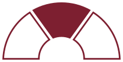

Análisis político
El proceso legislativo desde adentro: quién firma, qué comisión traba y qué se negocia antes del recinto.
Nosotros
El nombre no es una metáfora. Es cómo trabajamos: cada decisión pública se lee desde tres ángulos que se exigen entre sí. Ninguno alcanza solo, y por eso somos tres.
Análisis político
El proceso legislativo desde adentro: quién firma, qué comisión traba y qué se negocia antes del recinto.
Datos y tecnología
Los datos: la base del Congreso y la política convertida en probabilidades.
Estrategia
El número: qué le cuesta o qué le rinde a una empresa cada escenario.
Formados en ciencia política, con experiencia en políticas públicas, asuntos públicos, macroeconomía, gestión financiera y análisis político. Una generación que creció con los datos y aprendió la política desde adentro.

Tres Tercios